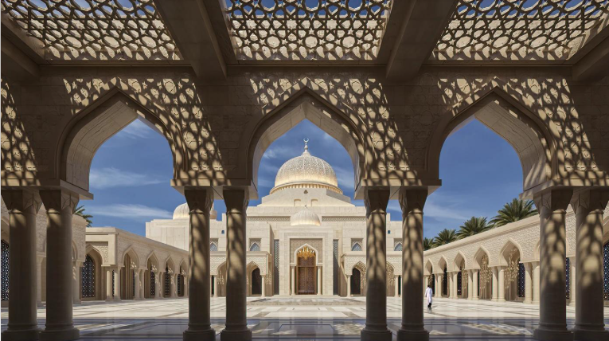

Islamic institutes are educational institutions that provide knowledge about Islam, the Holy Quran, Hadith, Islamic history, and Islamic values. Their main purpose is to educate students about the teachings of Islam and help them develop good character, honesty, kindness, peace, and respect for others.
Islamic institutes also promote unity, brotherhood, tolerance, and harmony in society. They encourage people to follow the teachings of Islam and contribute positively to the community.
Islamic education plays an important role in building a peaceful, moral, and educated society. Islamic institutes are places where students learn about the Holy Quran, Hadith, Islamic history, and the teachings of Islam. The main aim of Islamic education is to develop good character, honesty, kindness, discipline, and respect for all people. It teaches us the importance of peace, unity, brotherhood, and tolerance. Islamic institutes help students understand the true values of Islam and encourage them to become responsible members of society. They also promote harmony and mutual understanding among people of different communities. Through Islamic education, we can build a society based on knowledge, peace, respect, and humanity.

Our Islamic Institute is dedicated to providing quality Islamic education and helping students learn about the Quran, Islamic values, and teachings of Islam.
To spread authentic Islamic knowledge and encourage students to develop good character, discipline, and strong moral values.
To build a knowledgeable and responsible generation guided by Islamic teachings.


"Learn Islam, Build Your Future" represents the importance of gaining Islamic knowledge and applying its teachings in everyday life.
At NOORUL ILM, we aim to promote Islamic knowledge, education, and positive values through meaningful educational projects and community activities.
Q1. What is NOORUL ILM?
Ans. NOORUL ILM is an Islamic educational institute dedicated to spreading Islamic knowledge.
Q2. What courses do you offer?
Ans. We offer Quran, Tajweed, Hifz, Hadith, Tafseer, Arabic and Islamic Studies.
Q3. Who can join the institute?
Ans. Anyone interested in learning Islamic education can enquire about admission.
Q4. Do you teach the Holy Quran?
Ans. Yes, Quran reading and Tajweed are among our educational programs.
Q5. Do you teach Arabic?
Ans. Yes, we include Arabic language education.
Q6. How can I get admission?
Ans. You can contact our institute for admission information.
Q7. What is the main aim of NOORUL ILM?
Ans. Our aim is to spread Islamic knowledge and develop good character.
Q8. How can I contact you?
Ans. You can visit our Contact Us page for contact information.